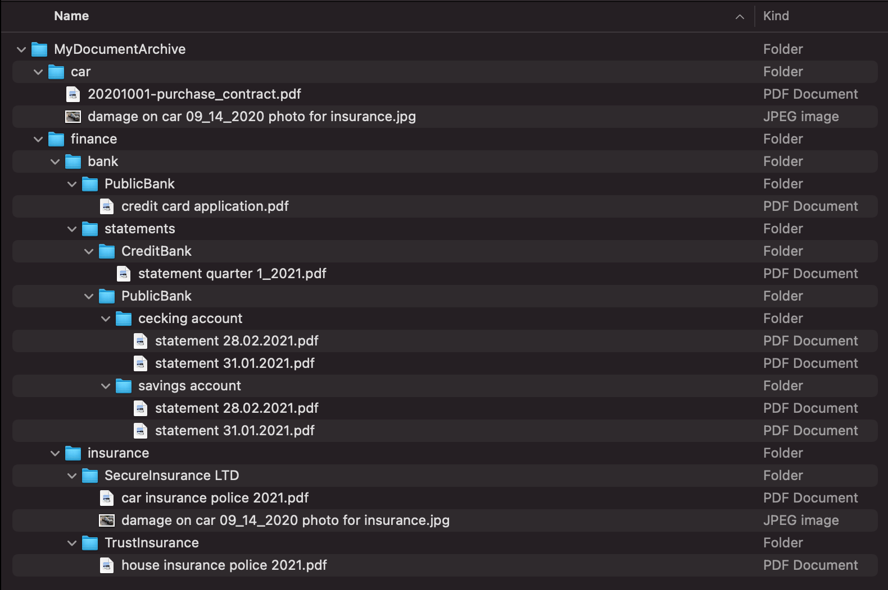
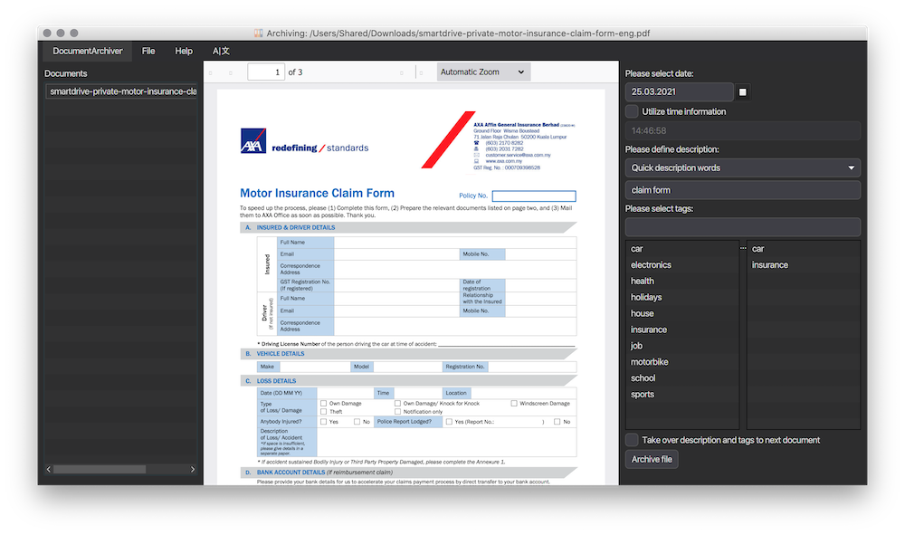
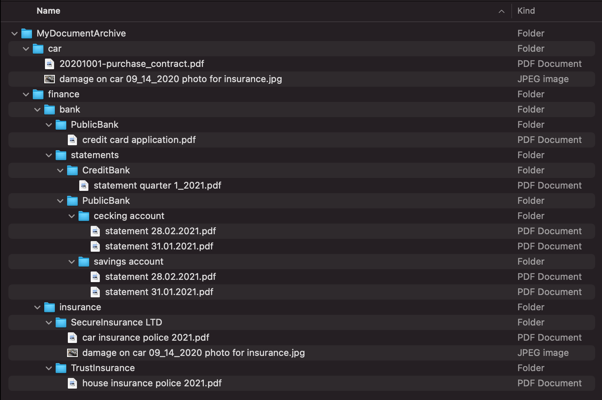

The challenge
Does your document archive look somewhat messy like this?
How about it would look rather tidy like this?

Archive all your documents in a consistent way, which enables you to retrieve them later fast and easy.
Does your document archive look somewhat messy like this?
How about it would look rather tidy like this?
We all store different kind of documents (office documents, miscellaneous types of PDFs, Images, Audio-Files, etc.) on our systems.
The challenge here is to find a consistent approach which will help us to retrieve the documents later in a fast and easy way.
Traditionally many people tend to establish some kind of folder structure on their storage space, which will then hold documents by a topic, a year, or whatever seems to fit.
However, this approach comes with various problems:
Document Archiver is inspired by the project "PDF Archiver" (https://github.com/PDF-Archiver/PDF-Archiver), which utilizes a consistent way to store PDF files in a defined folder structure and by using a fixed file naming pattern. This application picks up this core idea and makes it available for all document types and on all mayor platforms. Thanks to Julian Kahnert for agreeing to build on his great work!
Documents will be archived in this manner:
└── ~/Documents/DocumentArchiver
├── pdfs
│ ├── 2020
│ │ ├── 2020-01-05--invoice__car_insurance.pdf
│ │ └── 2020-07-01--invoice__house_insurance.pdf
│ └── 2021
│ └── 2021-01-05--invoice__car_insurance.pdf
└── images
├── 2020
│ ├── 2020-01-20-00-03-17--cake__birthday_stephan.jpg
│ ├── 2020-01-20-00-03-54--cake__birthday_stephan.jpg
│ └── 2020-03-16-15-32-23--party__birthday_natalia.jpg
└── 2021
└── 2021-01-20-00-02-42--party__birthday_stephan.jpg
yyyy-MM-dd or yyyy-MM-dd-HH-mm-ss Date (and - if requested - time) of the document content.--invoice Meaningful description of the document.__car_insurance Tags which will help you find the document in your archive.Document Archiver is open source software (free to use) and can be downloaded in two ways.
The "nice and easy" option for those who would like to install the application on their system and don't want to deal with things like setting up Java or executing commands on the command line.
The installer files were created with install4j, kindly supplied by ej-technologies GmbH.
If you already have Java on your system, don't feel like installing and don't fear the command line, you can download one of the following JAR files (and furthermore save some MBs on your storage).
Requirement:
You must have Java (minimum version 9) installed on your system.
Not sure? Check on your command line with:
java --versionStartup (example for macOS - possible variants "linux", "mac", "win"):
java -jar document-archiver-1.4.0-mac.jar